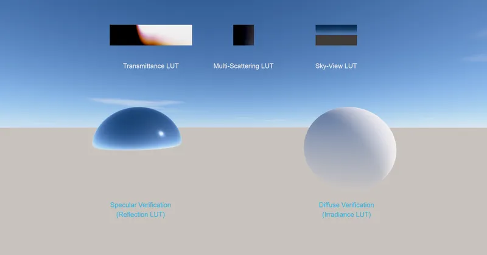

3D Lighting & Environment SkyBox & IBL SkyAtmosphere
SkyAtmosphere LUT Generator - RedGPU WebGPU Example
Visualizes internal Transmittance and SkyView LUTs for SkyAtmosphere.
대기 산란 계산에 사용되는 투과율·하늘 뷰 등 내부 LUT를 시각화합니다.

3D Lighting & Environment SkyBox & IBL SkyAtmosphere
Visualizes internal Transmittance and SkyView LUTs for SkyAtmosphere.
대기 산란 계산에 사용되는 투과율·하늘 뷰 등 내부 LUT를 시각화합니다.
